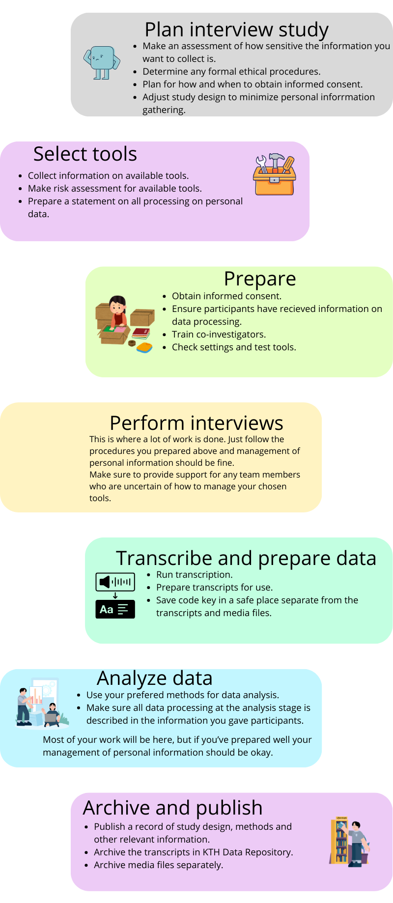

Interview studies: good research data management practices
Good research data practice when planning for, performing, recording and transcribing interviews
Interviews is a common qualitative research methodology that can be done in various contexts (online, in outdoor field studies, in very controlled clinical study settings outlined in an ethical permit, etc.). When performing an interview study, the major part of your work will be conducting the interviews and analyzing the results. In cases where you are mainly interested in what is said and not how it is said, transcription is commonly used.
The purpose of this guide is to focus on what to consider when you want to digitally record and transcribe the interviews. By taking part in your study, your research participants entrust you with a lot of personal information. Your aim will be to treat the information carefully, minimizing risks and maximizing the usefulness of the time and effort spent by you and your participants.
By considering how personal information will be processed in your research already at the planning step, you can both make your own work easier and improve communication with different stakeholders.

Step-by-step checklist with considerations from planning to publishing
This checklist tries to take many different scenarios into consideration, so please pick and choose the items that are helpful to you.
Planning
- Assess how sensitive the information you want to collect is - Do you plan to collect information that may cause harm for individuals participating in the research study? Assess what type of risk that may occur and make sure everyone involved are aware of risks.
- Determine any formal ethical procedures - If your research involves special categories of personal information or information about individual criminal records you need to apply for an ethics approval from the Ethics Review Authority. KTH Research Ethics Support has more information on their website. Swedish research funders usually rely on the national ethics approval system. However, for international funders, check their rules and requirements. If your research does not need an ethics approval from the Ethics Review Authority, but your funder still requires that you have approval from an institutional ethics committee, contact the KTH Ethics committee.
- Plan for how and when to obtain informed consent - Do you want to obtain informed consent in written form or simply record it at the beginning of the interview? There are templates for informed consent.
- Adjust study design to minimize collected personal information - Consider if you can phrase interview guides or interview questions to encourage answers that are useful for your research without collecting sensitive information more than necessary. If you want to quote answers that contain personal information, you will have to remove information that would make it possible to de-identify individuals if they have not given explicit consent to be mentioned in published material.
Select tools for recording, transcribing and processing
- Collect information on available tools - See the how-to guide on the subpage for KTH IT provided tools.
- Make a risk assessment for available tools - See the how to guide on the subpage for description of risks for KTH IT provided tools.
- Prepare a statement on all processing of personal data - This is a list of the tools you are using.
Prepare for interviews
- Obtain informed consent - Important if research is conducted under an ethics permit.
- Ensure participants have received information on data processing - Not necessarily in great detail but at least mention it so that people are aware of how their personal data is processed.
- Train co-investigators - This step is relevant if you are more than one person performing interviews in the research setting.
- Check settings and test tools - See the practical guides on how to record interviews.
Perform interviews
- Follow the procedures you prepared above - The preparations ensure proper management of personal information so that you can focus on the interviewing itself.
- Make sure to provide support for any team members so they know the procedure - Helping any team members that are uncertain of how to manage your chosen tools hopefully makes interviewing and transcribing smoother and more efficient.
Transcribe and prepare data
- Run transcription - See the practical guides for how to do it.
- Prepare transcripts for use.
- Save code key in a safe place separate from the transcripts and media files.
Analyze
- Use your chosen methods for data analysis - At present there is no KTH-wide procured service like Nvivo, Atlas.ti or Transana but you can contact your school's IT-coordinator for information about licenses.
- Make sure all data processing at the analysis stage is described in the information you gave participants.
Publish and archive
Publish one or several records for material describing study design, methods and other relevant information. Files with transcripts can be uploaded for archiving, in most cases with restricted access to files. Media files are in most cases recommended to be uploaded with restricted acess. The DOI for this record can be referred to in a data availability statement in journals when the results are published.
- Archive the transcripts in KTH Data Repository - make sure to choose an appropriate access level for the transcript files according to the consent of study participants and to process transcripts in order to mask sensitive information that is not needed for your research study.
- Archive media files separately - If the recordings do not contain particularly sensitive personal information, you can archive them as a separate record in the KTH Data Repository. Optionally, you may add consent forms to the record. Recommended practice is to link to the published record and the record with the media files, provided that the media file record is not subject to strict secrecy. If the media files contain material subject to strict secrecy, contact security@kth.se for advice on alternative secure archival storage.
- Keep the code key securely in a separate storage - If you do not have such a secure storage place at your department, contact security@kth.se for advice.
General risks related to personal integrity of individuals participating in a digitally performed interview study
Interviews are often documented in the form of video or audio recordings, and these recordings need to be handled with care since they contain biometric data: voices in audio/video recordings and faces in video recordings. This means that such recordings cannot be openly published unless the participant gives their explicit consent.
It also means that you need to consider ethical aspects and assess the risk associated with leakage of any information collected during the interviews. If the risk is considerable that individuals may be harmed if their personal information is leaked, you need to take reasonable security measures to ensure processing of such sensitive personal data in a way that reduces the risk of data leakage. It is also good to document the risk assessment - that is, what risks you see and what digital tools you have used and what security measures you have taken. This could be done as a part of a data management plan or in a separate document.
Recommended security measures to prevent data leakage if you collect more sensitive personal information
More sensitive personal information according to GDPR is personal information regarding health, sexual orientation, political opinion, ethnicity, membership of a union, or genetical and biometric information. Personal information can also be sensitive if it is collected from someone belonging to a vulnerable group, i.e., children or political refugees.
A key point here is that if the risk of causing harm to individuals is high if data ends up in the wrong hands, you need to take extra security measures to protect the confidentiality of the information:
- Record interviews using either a KTH-procured online recording service or a separate offline recording device.
- Minimize acccess to the files by not sharing access to more researchers than necessary and use a strong password and if possible two-factor authentication for access.
- Do not store files in a service you use temporarily for processing for longer than necessary. That is, if you use a service for video recording and transfer those to a secure storage, you should delete the files from the recording service once you have transferred them.
- Use encrypted transfer to move files to access-controlled, encrypted storage.
- Minimize or avoid use of digital services with very long chains of sub-processors, especially if such sub-processors require transfer of personal data outside of Europe. Transcribing using automatic real-time captions is therefore not recommended for privacy-sensitive interviews.
- Process the transcripts in order to remove personal identifiers - see more on methods in the national guidance on processing qualitative data.
- Use a data repository that fulfils archival requirements and that maintains long-term (at least ten years) storage of recordings and transcripts. Keep recordings and code-keys in a separate storage system/folder/record with stricter access control than the transcripts. A metadata-record describing the study and including contact information for requesting access can be deposited in a data repository with access control, such as researchdata.se or KTH Data Repository.
Depending on your research context, there are many workflows for recording and transcribing interviews, comprising different digital services, systems or software installed on your own device. As we have seen, different tools & approaches have different pros and cons.
For practical how-to guides on how you can perform such a workflow - look at the how-to guide for using KTH digital tools for recording and transcribing.